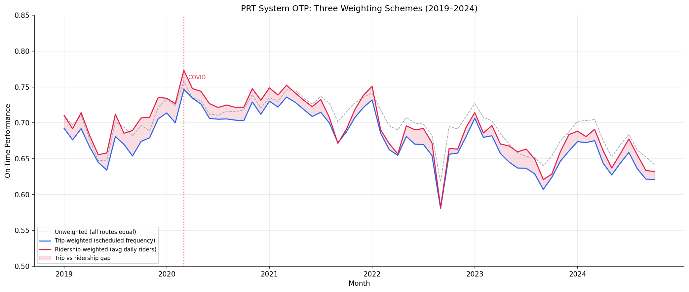

Analysis
19 - Ridership-Weighted OTP
Route and Service Drivers
Coverage: 2017-01 to 2025-11 (from otp_monthly, ridership_monthly).
Built 2026-03-28 00:29 UTC · Commit b203c34
Page Navigation
Analysis Navigation
Data Provenance
flowchart LR
19_ridership_weighted_otp(["19 - Ridership-Weighted OTP"])
t_otp_monthly[("otp_monthly")] --> 19_ridership_weighted_otp
01_data_ingestion[["Data Ingestion"]] --> t_otp_monthly
u1_01_data_ingestion[/"data/routes_by_month.csv"/] --> 01_data_ingestion
u2_01_data_ingestion[/"data/PRT_Current_Routes_Full_System_de0e48fcbed24ebc8b0d933e47b56682.csv"/] --> 01_data_ingestion
u3_01_data_ingestion[/"data/Transit_stops_(current)_by_route_e040ee029227468ebf9d217402a82fa9.csv"/] --> 01_data_ingestion
u4_01_data_ingestion[/"data/PRT_Stop_Reference_Lookup_Table.csv"/] --> 01_data_ingestion
u5_01_data_ingestion[/"data/average-ridership/12bb84ed-397e-435c-8d1b-8ce543108698.csv"/] --> 01_data_ingestion
t_ridership_monthly[("ridership_monthly")] --> 19_ridership_weighted_otp
01_data_ingestion[["Data Ingestion"]] --> t_ridership_monthly
t_route_stops[("route_stops")] --> 19_ridership_weighted_otp
01_data_ingestion[["Data Ingestion"]] --> t_route_stops
d1_19_ridership_weighted_otp(("polars (lib)")) --> 19_ridership_weighted_otp
d2_19_ridership_weighted_otp(("scipy (lib)")) --> 19_ridership_weighted_otp
classDef page fill:#dbeafe,stroke:#1d4ed8,color:#1e3a8a,stroke-width:2px;
classDef table fill:#ecfeff,stroke:#0e7490,color:#164e63;
classDef dep fill:#fff7ed,stroke:#c2410c,color:#7c2d12,stroke-dasharray: 4 2;
classDef file fill:#eef2ff,stroke:#6366f1,color:#3730a3;
classDef api fill:#f0fdf4,stroke:#16a34a,color:#14532d;
classDef pipeline fill:#f5f3ff,stroke:#7c3aed,color:#4c1d95;
class 19_ridership_weighted_otp page;
class t_otp_monthly,t_ridership_monthly,t_route_stops table;
class d1_19_ridership_weighted_otp,d2_19_ridership_weighted_otp dep;
class u1_01_data_ingestion,u2_01_data_ingestion,u3_01_data_ingestion,u4_01_data_ingestion,u5_01_data_ingestion file;
class 01_data_ingestion pipeline;
Findings
Findings: Ridership-Weighted OTP
Summary
Ridership-weighted system OTP (69.4%) runs 1.6 percentage points higher than trip-weighted OTP (67.8%), and the difference is statistically significant (paired t = -18.1, p < 0.001; Wilcoxon W = 1, p < 0.001). This means the average PRT rider experiences slightly better on-time performance than the trip-weighted system average suggests.
Key Numbers
- Unweighted OTP (all routes equal): 69.9% mean, 70.3% median
- Trip-weighted OTP (scheduled frequency): 67.8% mean, 67.8% median
- Ridership-weighted OTP (avg daily riders): 69.4% mean, 69.2% median
- Ridership vs trip-weighted gap: +1.6 pp (p < 0.001, n = 70 months)
- 93 routes with 12+ months of paired OTP + ridership data
- Overlap period: Jan 2019 -- Oct 2024 (70 months)
Interpretation
Both weighted series fall below the unweighted average, meaning both scheduled trips and actual riders concentrate somewhat on worse-performing routes. However, trip frequency overstates how much ridership is concentrated on the worst routes. High-frequency routes tend to have many stops and poor OTP (Analysis 07), but riders don't fill those trips proportionally -- some high-frequency routes carry fewer riders per trip than expected. The result is that the average rider's experience is worse than the average route's OTP, but not as bad as the trip-weighted number implies.
This does not mean high-ridership routes have better OTP. It means ridership is distributed more evenly across the OTP spectrum than trip frequency is.
Observations
- The gap between trip-weighted and ridership-weighted OTP is not constant: it was near zero during COVID (2020), widened to ~3 pp in late 2022, and has stabilized around 1--2 pp since 2023. This likely reflects post-COVID ridership redistribution.
- All three series show the same overall trend: COVID spike, steady decline through late 2022, partial stabilization in 2023--2024.
Caveats
- Ridership data is weekday average only; the analysis does not capture weekend rider experience.
route_stops.trips_7dis a current snapshot, not a monthly time series -- trip-weighted OTP uses the same weights for all months.- Routes missing from the ridership dataset (RLSH, SWL) are excluded from all three series for comparability, so the unweighted series here may differ slightly from Analysis 01.
- The ridership CSV ends Oct 2024 while OTP data extends to Nov 2025; the analysis is restricted to the overlap period.
Output

three-series time plot.
No interactive outputs declared.
mean, median, std for each weighting scheme.
Preview CSV
monthly values for all three series.
Preview CSV
Methods
Methods: Ridership-Weighted OTP
Question
How does the average rider's on-time experience differ from the average route's OTP? Does weighting by actual ridership instead of scheduled trip frequency change the system-wide OTP picture?
Approach
- Join monthly OTP data with monthly average weekday ridership by route and month.
- Compute three monthly system OTP series:
- Unweighted: simple mean of all route OTPs (all routes equal).
- Trip-weighted:
sum(otp_i * trips_7d_i) / sum(trips_7d_i)using static scheduled trip counts fromroute_stops(same weight every month). - Ridership-weighted:
sum(otp_i * avg_riders_i) / sum(avg_riders_i)using that route's average daily weekday ridership for the same month (weight varies month-to-month).
- Plot all three series over time to visualize divergence.
- Compute summary statistics (mean, spread) for each weighting scheme.
- Test whether the ridership-weighted series is significantly different from the trip-weighted series (paired t-test or Wilcoxon).
Data
| Name | Description | Source |
|---|---|---|
otp_monthly |
Route, month, OTP | prt.db table |
average-ridership |
Route, month_start, day_type='WEEKDAY', avg_riders | Local CSV (data/average-ridership/) |
route_stops |
For trip-weighted baseline (trips_wd) | prt.db table |
Notes: Join on route code and month; restrict to overlap period (Jan 2019 -- Oct 2024). Exclude routes with fewer than 12 months of data.
Output
Source Code
|
Sources
| Name | Type | Why It Matters | Owner | Freshness | Caveat |
|---|---|---|---|---|---|
| otp_monthly | table | Primary analytical table used in this page's computations. | Produced by Data Ingestion. | Updated when the producing pipeline step is rerun. | Coverage depends on upstream source availability and ETL assumptions. |
Upstream sources (5)
|
|||||
| ridership_monthly | table | Primary analytical table used in this page's computations. | Produced by Data Ingestion. | Updated when the producing pipeline step is rerun. | Coverage depends on upstream source availability and ETL assumptions. |
Upstream sources (5)
|
|||||
| route_stops | table | Primary analytical table used in this page's computations. | Produced by Data Ingestion. | Updated when the producing pipeline step is rerun. | Coverage depends on upstream source availability and ETL assumptions. |
Upstream sources (5)
|
|||||
| polars | dependency | Runtime dependency required for this page's pipeline or analysis code. | Open-source Python ecosystem maintainers. | Version pinned by project environment until dependency updates are applied. | Library updates may change behavior or defaults. |
| scipy | dependency | Runtime dependency required for this page's pipeline or analysis code. | Open-source Python ecosystem maintainers. | Version pinned by project environment until dependency updates are applied. | Library updates may change behavior or defaults. |